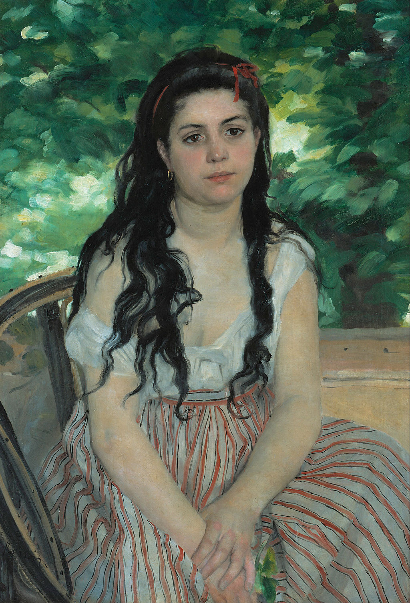

<head>
<meta charset="UTF-8" />
<meta name="keywords" content="drawing, painting" />
<meta name="description" content="drawings by Sunjy" />
<title>Sunjy</title>
<link rel="shortcut icon" type="image/x-icon" href="../../mImages/mCommon/favicon.ico" media="screen" />
<link rel="stylesheet" type="text/css" href="../../mCsses/mCommon/mCssA.css" />
<link rel="stylesheet" type="text/css" href="../../mCsses/mCommon/mCssB.css" />
<link rel="stylesheet" type="text/css" href="../../mCsses/mCommon/mCssC.css" />
<link rel="stylesheet" type="text/css" href="../../mCsses/mCommon/mCssD.css" />
<link rel="stylesheet" type="text/css" href="../../mCsses/mContent/mCssA.css" />
<link rel="stylesheet" type="text/css" href="../../mCsses/mContent/mCssB.css" />
<link rel="stylesheet" type="text/css" href="../../mCsses/mContent/mCssC.css" />
<link rel="stylesheet" type="text/css" href="../../mCsses/mContent/mCssD.css" />
</head>
<script type="text/javascript" src="../../mScripts/mContent/mContentAA.js" /></script>
<script type="text/javascript" src="../../mScripts/mContent/mContentAB.js" /></script>
<script type="text/javascript" src="../../mScripts/mContent/mContentAC.js" /></script>
<script type="text/javascript" src="../../mScripts/mContent/mContentAD.js" /></script>
<script type="text/javascript"></script> 
<script type="text/javascript">
document.write('<div class="mImgAbsolute"></div>');
/*
document.write('<p class="mFontSizeBColor" />From a white paper...</p>');
document.write('<table class="center"><tr><td>');
document.write('');
document.write('</td></tr></table>');
*/
</script>


<script type="text/javascript">
document.write('<p class="mFontSizeBColor" />In Summer</p>');
document.write('<p class="mFontSizeSColor" />“In Summer” by Pierre-Auguste Renoir is a portrait of twenty-year-old Lise Tréhot, who was Renoir’s companion from about 1866 to 1871.<br><br>He painted her at least 23 times, including Lise, with a parasol, painted in 1867, which was Renoir’s first significant critical success at the Paris Salon in 1868.<br><br>This success inspired Renoir to repaint her, this time in a more informal and intimate style.<br><br>The portrait is of a young woman, dressed informally, sitting on a chair with greenery behind.<br><br>Lise is carefully finished, but the background is sketched out roughly with bold dashes of color in broad brushstrokes suggesting sunlit foliage.<br><br>A thin red hairband holds her hair back from her face, with wavy tresses falling loosely over her shoulders. <br><br>Her arms lie in her lap, with a few green leaves held in her right hand. Lise has a distant expression, gazing into the distance.<br><br>Lise Tréhot (1848 – 1922) was a French art model who posed for Renoir from 1866 until 1872, during his early Salon period.<br><br>She was the model for almost all of Renoir’s work featuring female figures at this time. Tréhot later married Georges Brière de l’Isle in 1883 and raised four children.<br></p>');
document.write('<table class="center" /><tr><td>');
document.write('<br>He painted her at least 23 times, including Lise, with a parasol, painted in 1867, which was Renoir’s first significant critical success at the Paris Salon in 1868.<br><br>This success inspired Renoir to repaint her, this time in a more informal and intimate style.<br><br>The portrait is of a young woman, dressed informally, sitting on a chair with greenery behind.<br><br>Lise is carefully finished, but the background is sketched out roughly with bold dashes of color in broad brushstrokes suggesting sunlit foliage.<br><br>A thin red hairband holds her hair back from her face, with wavy tresses falling loosely over her shoulders. <br><br>Her arms lie in her lap, with a few green leaves held in her right hand. Lise has a distant expression, gazing into the distance.<br><br>Lise Tréhot (1848 – 1922) was a French art model who posed for Renoir from 1866 until 1872, during his early Salon period.<br><br>She was the model for almost all of Renoir’s work featuring female figures at this time. Tréhot later married Georges Brière de l’Isle in 1883 and raised four children.<br>" />');
document.write('</td></tr></table>');
</script>


